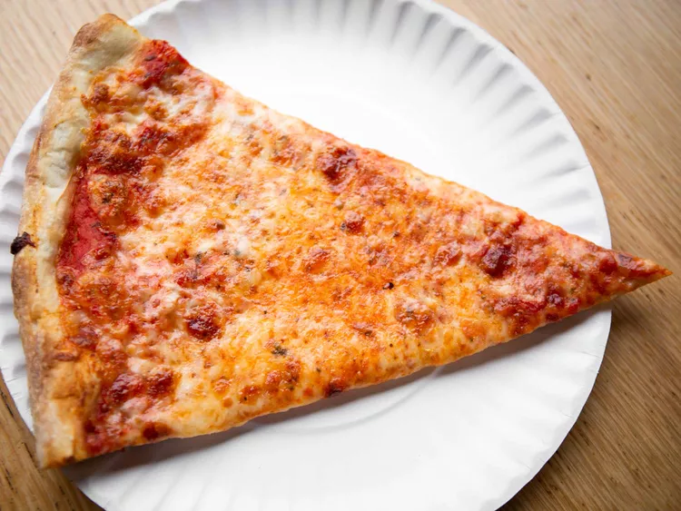

Pizza Recipe

How to make a thin new york pizza
A classic New York-style bagel recipe involves creating a chewy, slightly crisp bagel with a dense interior. The dough is made with high-gluten flour, water, sugar, salt, and yeast, kneaded until smooth, and left to rise. After shaping the dough into rings, they are briefly boiled in a mixture of water and a little honey or malt syrup, which helps to achieve that characteristic shiny, golden crust. The bagels are then baked until golden brown. Toppings vary, but traditional choices include sesame seeds, poppy seeds, or everything seasoning, and they're often served with classic spreads like cream cheese, lox, and capers. The New York-style bagel is known for its perfect balance of texture and flavor, with a chewy inside and a crisp, flavorful outer crust.
Everything you will need
For the dough:
- 4 cups all-purpose flour
- 1 1/2 teaspoons salt
- 1 teaspoon sugar
- 1 tablespoon dry yeast
- 1 1/2 cups warm water
- 2 tablespoons of olive oil
For the sauce:
- 1 can (15 oz) crushed tomatoes
- 1 tablespoon olive oil
- 1 teaspoon garlic powder
- 1 teaspoon dried oregano
- 1 teaspoon dried basil
- 1/2 teaspoon sugar
- Salt and pepper to taste
For the toppings:
- 2 cups shredded whole-milk mozzarella cheese
- Optional: Parmesan cheese (for sprinkling)
- Optional: Fresh basil leaves
- Optional: Olive oil (for drizzling)
Step 1: Prepare the dough
- in a small bowl, combine 1 1/2 cups warm water with 1 teaspoon sugar and 1 tablespoon active dry yeast. Let it sit for about 5-10 minutes until it becomes frothy.
- In a large mixing bowl, combine 4 cups all-purpose flour and 1 1/2 teaspoons salt. Pour in the activated yeast mixture and 2 tablespoons olive oil. Stir until a dough begins to form.
- Transfer the dough to a lightly floured surface and knead for about 8-10 minutes until smooth and elastic. Add a little more flour if the dough is too sticky.
- Place the dough in a lightly oiled bowl, cover it with a damp cloth or plastic wrap, and let it rise in a warm area for about 1-1.5 hours, or until it doubles in size.
Step 2: Prepare the Sauce
- Cook the sauce: In a saucepan, heat 1 tablespoon of olive oil over medium heat. Add the 1 can of crushed tomatoes, 1 teaspoon garlic powder, 1 teaspoon dried oregano, 1 teaspoon dried basil, and 1/2 teaspoon sugar. Stir well and simmer for 10-15 minutes, allowing the flavors to blend. Season with salt and pepper to taste. Remove from heat and set aside.
Step 3: Preheat the Oven
- Preheat your oven to 475°F (245°C). If you have a pizza stone, place it in the oven while preheating to ensure it gets very hot for a crisp crust.
Step 4: Shape the Dough
- Punch down the dough: Once the dough has risen, punch it down to release any air bubbles.
- Divide the dough: If making more than one pizza, divide the dough into two equal portions. For one large pizza, keep the dough in one piece.
- Shape the dough: Roll out the dough on a floured surface, using a rolling pin or your hands, to form a large circle (about 12-14 inches). If you like a thinner crust, roll it out more thinly.
Step 5: Assemble the Pizza
- Transfer to a baking sheet or pizza stone: If you're using a pizza stone, transfer the rolled-out dough onto a floured pizza peel before moving it into the oven. Otherwise, place the dough onto a lightly oiled or parchment-lined baking sheet.
- Add the sauce: Spread a thin layer of the prepared pizza sauce evenly over the dough, leaving a small border around the edges for the crust.
- Add the cheese: Sprinkle about 2 cups of shredded mozzarella cheese evenly over the sauce. Optionally, you can add some grated Parmesan cheese for extra flavor.
Step 6: Bake the Pizza
- Bake: Place the pizza in the preheated oven and bake for 10-15 minutes or until the crust is golden and the cheese is bubbly and slightly browned.
- Optional toppings: If you like, add fresh basil leaves or drizzle a little olive oil over the pizza during the last few minutes of baking for extra flavor.
Step 7: Serve
- Cool and slice: Once the pizza is done, remove it from the oven and let it cool for a couple of minutes before slicing.
- Enjoy: Cut the pizza into slices, serve, and enjoy your delicious homemade New York-style pizza!